Jak to začalo
První taštice byla začátek. Ale rozhodně ne proto, že by za ní stál nějaký promyšlený podnikatelský plán. Prostě jsem měla kus kůže, představu a chuť zjistit, jestli to zvládnu.
A pak přišel zápisník.
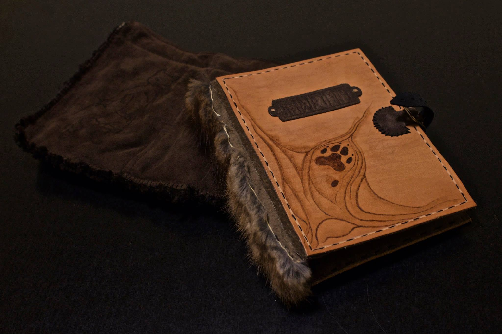
Pyrografické náramky.
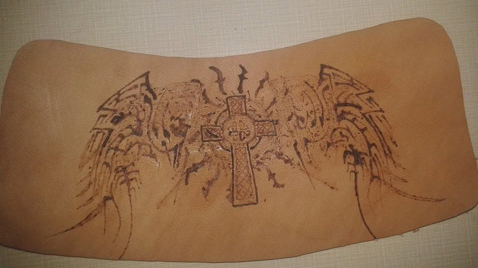
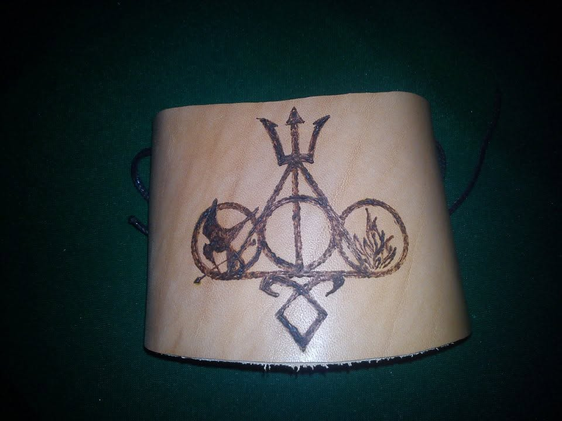
První pouzdro na nůž.
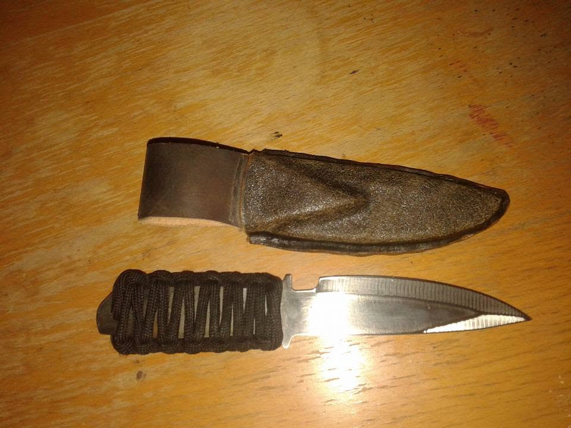
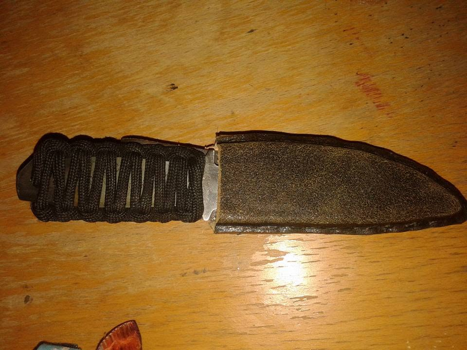
První raznice.
Vůbec jsem je tehdy neuměla používat. Neměla jsem ani paličku, takže jsem je do kůže zatlačovala rukou. Kůže už byla pěkně stará a výsledkem byl mimo jiné první pokus o Bezzubku.
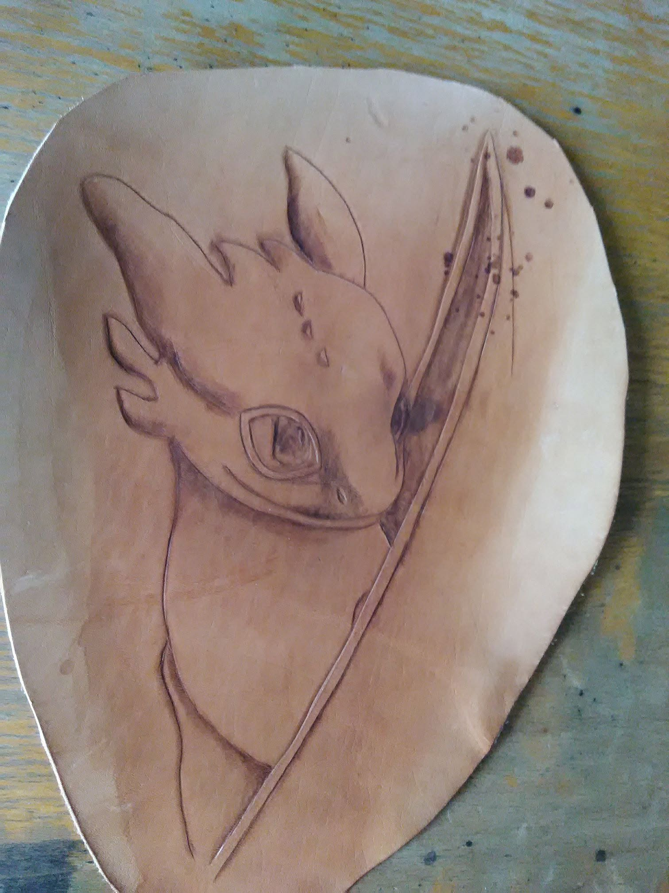
Pak přišel handpoke.
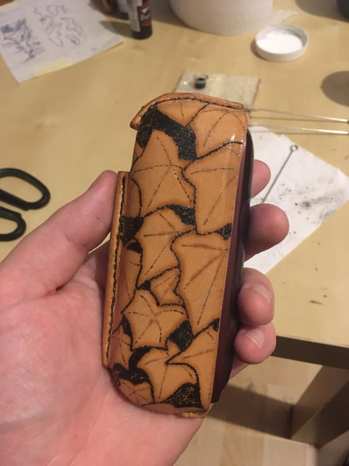
První pokus. Druhý. Třetí.
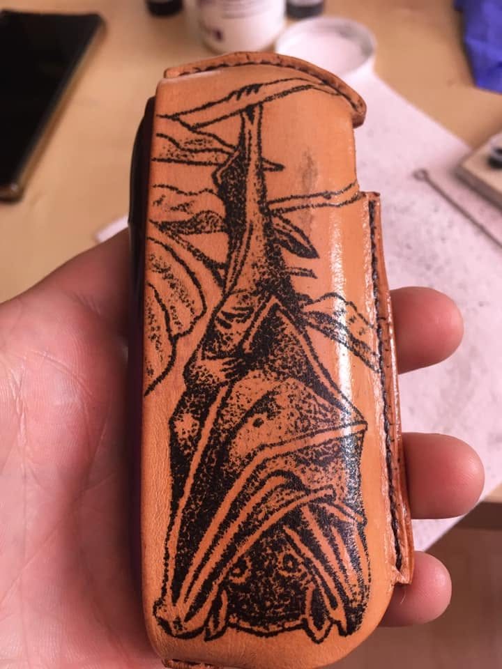
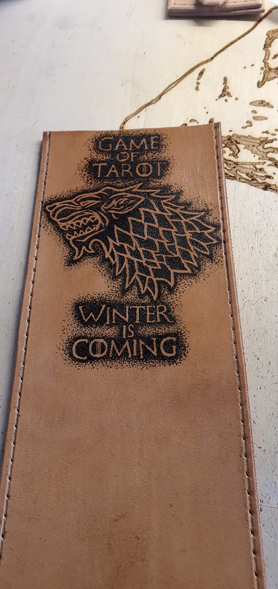
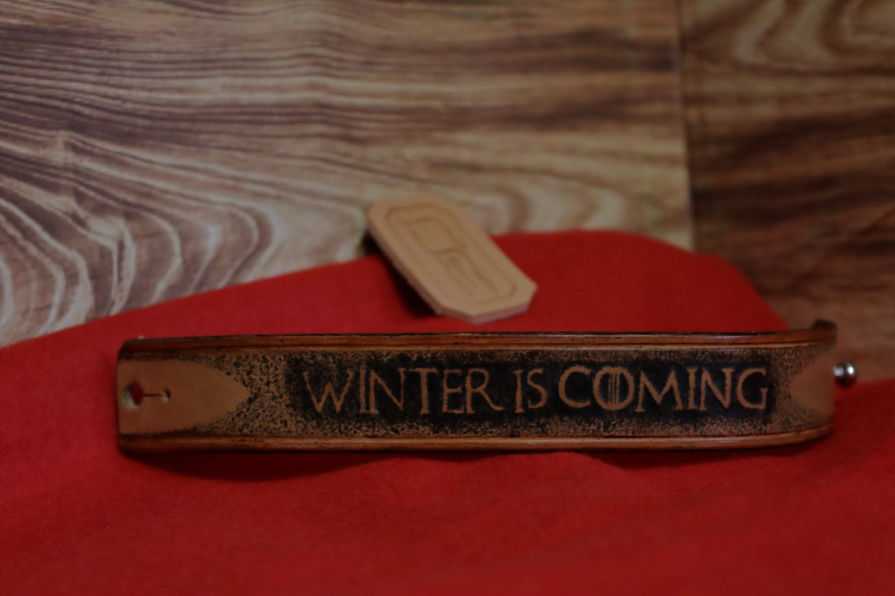
U třetího už jsem si evidentně řekla, že když už, tak pořádně.
A pak přišla první handpoke zakázka – obal na knihy s kompasem. Fotka toho obalu je dnes čtyři roky stará. Samotný obal pořád drží, pan Žamboch si ho chtěl nechat na autogramiádě a dokonce se dostal až na svatbu, kde byl jako obal knihy v rukou oddávajícího.


Takové věci se při výrobě úplně neplánují.
Stejně jako se neplánovalo všechno, co přišlo potom.
Začala jsem zkoušet další typy výrobků. Obojky, manžety, klíčenky, pouzdra, obaly, opasky. Barvy. Ražbu. Patinu. Kombinace různých technik.
Většinou podle jednoduchého principu:
Nikdy jsem to nedělala. Tak to zkusím.
A pak přišla brašna.
Byla to moje první. A rozhodně ne malá.
Měla pojmout sedmnáctipalcový notebook, zápisníky, brýle i vape. Měla mít místo na propisku, odnímatelný popruh a možnost připnutí k opasku tak, aby při nošení nelítala. Všechno z pevné kůže. Všechno ručně.
V nejsilnějším místě jsem prošívala devět milimetrů kůže. Na celé brašně jsem strávila zhruba 10 dní a čistý čas výroby vyšel na 168 hodin. Spala jsem tehdy asi dvě hodiny denně.
Byla to regulérní zakázka. Tak jsem se do ní pustila.


Občas z toho vznikla věc, na kterou jsem byla pyšná.
Občas zkušenost.
A občas velmi důležitá životní lekce v podobě padesáti kožených kousků velikosti padesátikoruny, které jsem všechny ručně řezala, zdobila a patinovala.


Byla to skvělá zkušenost.
A také první výrobek, u kterého jsem si s naprostou jistotou řekla: „Tohle už nikdy dělat nebudu.“ 😄
A pak jsem začala řešit, jak to všechno ukázat
Zpočátku nebylo žádné studio.
Byl kus kartonu a kus červeného fleecu.


Někde kolem desátého výrobku už ale existoval i můj znak. Nejdřív vytištěný na 3D tiskárně. A byl absurdně velký.
Mám ho dodnes.

Postupně jsem začala zjišťovat, co vlastně potřebuji k tomu, aby fotografie vypadaly tak, jak chci.
Nejprve přišel levný plastový fotobox. Pak vlastní.
Kartonová krabice, pár LED pásků, pauzák kvůli rozptýlení světla a dřevěný polep na nábytek.
Zní to trochu směšně.
Ale fungovalo to.
A funguje to dodnes.
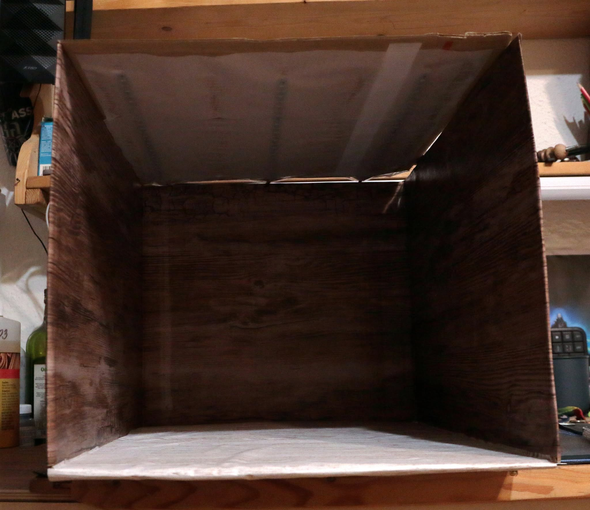
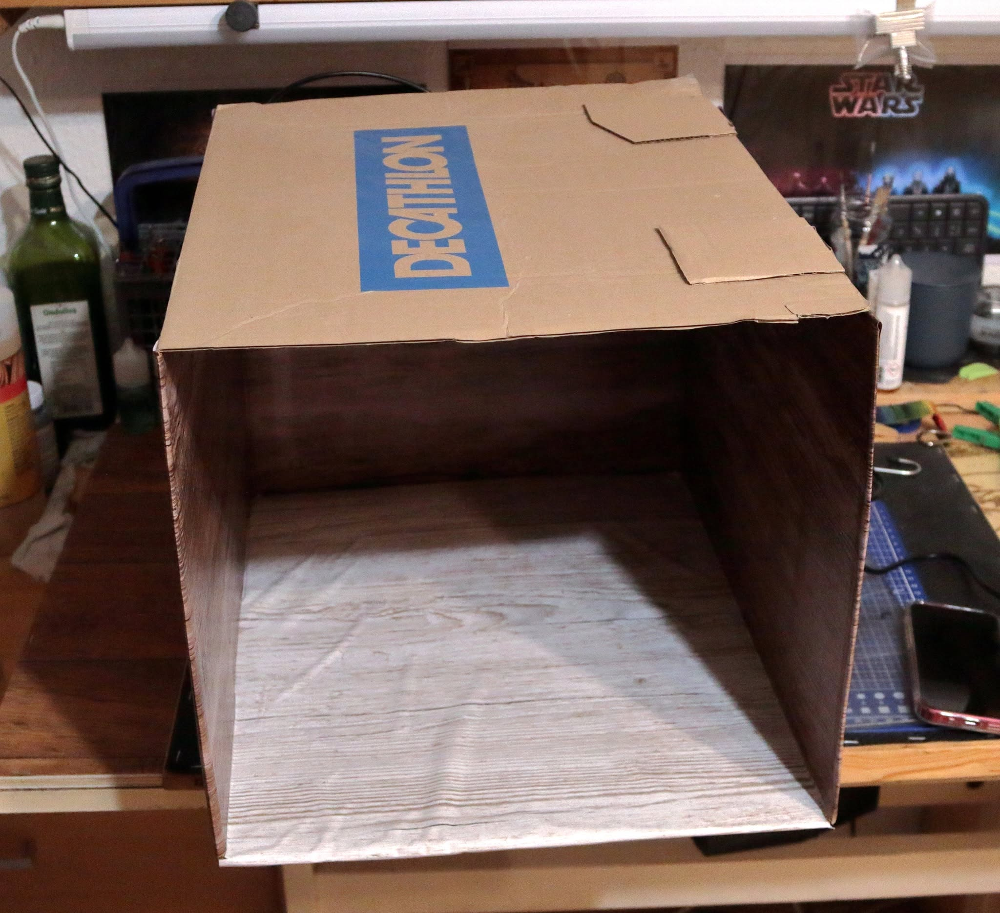
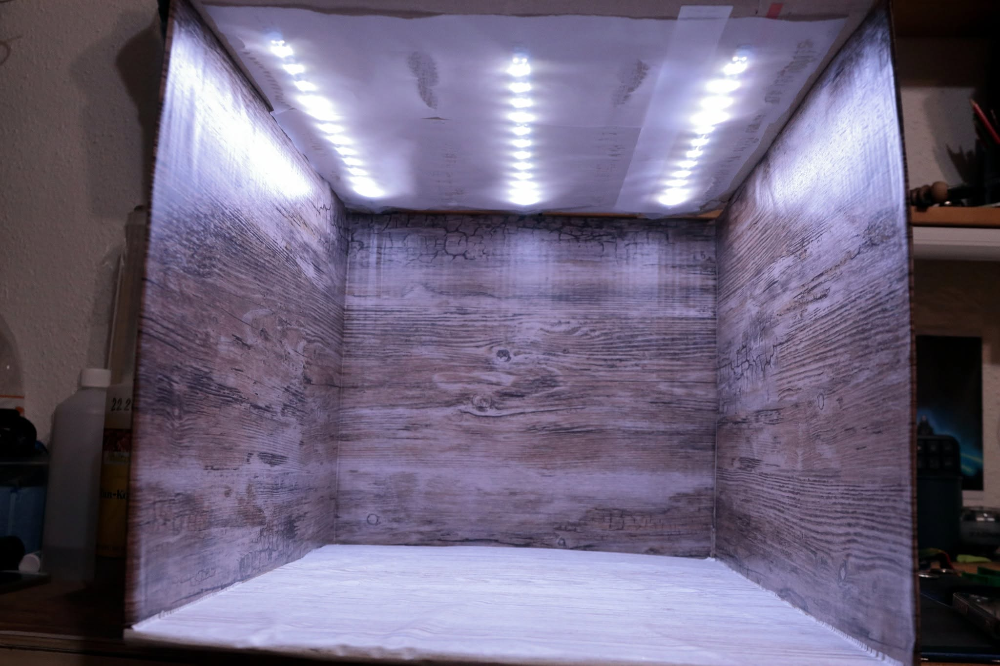
Tenhle fotobox je už tři roky součástí dílny. Je to neskladná kráva, zabírá místo a rozhodně nevypadá jako profesionální fotografické vybavení.
Ale je moje.
A právě díky němu začaly fotografie dostávat vlastní podobu. Stejně jako výrobky.
Někde v téhle době se začaly věci pomalu skládat dohromady.
Už jsem nezkoušela jen nové techniky. Začala jsem zjišťovat, co vlastně tvoří můj vlastní způsob práce.
Jak má vypadat reliéf. Jak pracovat s barvou. Jak kombinovat materiály. Jak výrobek vyfotit. Jak ho označit.
Původní 3D tištěný znak nakonec vystřídala skutečná raznice.
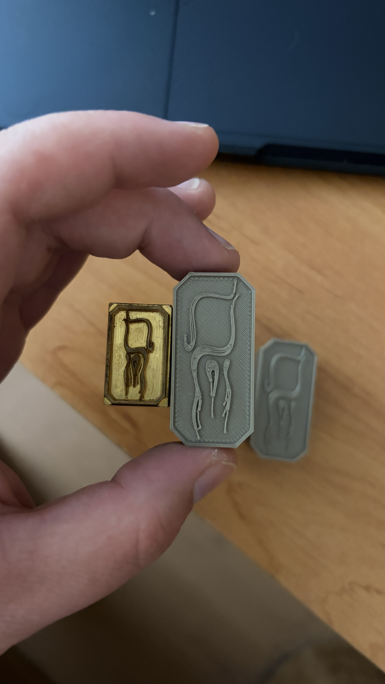
A později přišly i watermarky do fotografií.
Najednou už nebyl jen výrobek.
Byl tu výrobek, jeho znak, fotografie a způsob, jakým jsem ho představovala.
A někde mezi tím vším se z původního „zkusím vyrobit taštici“ začalo stávat něco, co už mělo vlastní charakter.
Ne proto, že bych si to takhle naplánovala.
Spíš proto, že jsem postupně nechávala to, co fungovalo, zůstat.
A to, co nefungovalo, jsem zahodila.
Takhle Handmade Calwen rostl.
Kus po kuse. Pokus po pokusu.
Někdy velmi elegantně.
A někdy přesně naopak. 😄
Ale vždycky ručně.